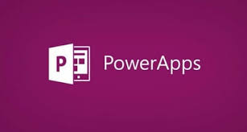
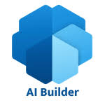

2016 - PowerApps e Microsoft Flow
2016 foi o ano em que a Microsoft revolucionou a maneira de criar aplicativos e automatizar processos de negócios com o lançamento do PowerApps e do Microsoft Flow (hoje conhecido como Power Automate). O PowerApps permitiu que usuários de todos os níveis de experiência criassem aplicativos móveis e de desktop personalizados, sem a necessidade de escrever código, tornando o desenvolvimento acessível e ágil para empresas de todos os tamanhos.
O Microsoft Flow, por sua vez, foi uma solução poderosa para automação de fluxos de trabalho e integração de diversos serviços. Permitindo que ações automáticas fossem realizadas entre aplicativos da Microsoft e de terceiros, a plataforma abriu portas para uma grande redução de tarefas repetitivas e melhor aproveitamento do tempo. Essa combinação de soluções representou um marco na transformação digital, permitindo que empresas pudessem criar e automatizar suas operações com facilidade e sem custos elevados.
2018 - Power BI e Power Automate

Em 2018, a Microsoft fez uma grande evolução ao integrar os serviços PowerApps, Flow (Power Automate) e Power BI em uma plataforma única: a Power Platform. Isso significou que empresas poderiam agora, não só desenvolver aplicativos e automatizar processos, mas também obter insights valiosos sobre seus dados, tudo dentro do mesmo ecossistema.
O Power BI trouxe uma capacidade de visualização de dados poderosa e intuitiva, permitindo que os usuários transformassem grandes volumes de dados brutos em gráficos e dashboards dinâmicos, facilitando a análise e a tomada de decisões em tempo real. Essa integração criou um ambiente colaborativo onde os negócios podiam desenvolver soluções completas que conectavam dados, análises e automação, tudo sem precisar de habilidades técnicas avançadas.
2019 - Power Virtual Agents

Em 2019, a Microsoft adicionou uma nova ferramenta à Power Platform: o Power Virtual Agents. Essa solução permitiu que qualquer usuário, mesmo sem conhecimento de programação, criasse chatbots inteligentes que pudessem interagir com clientes ou realizar tarefas automatizadas. O Power Virtual Agents foi desenvolvido para ser extremamente intuitivo, com uma interface gráfica para construir conversas automatizadas, sem a necessidade de escrever código.
Os chatbots, ou bots de conversação, tornaram-se uma parte essencial das empresas, especialmente no atendimento ao cliente, onde podem lidar com grandes volumes de interações de forma eficiente. Isso não só reduziu custos operacionais, como também melhorou a experiência do cliente, proporcionando respostas rápidas e precisas a qualquer momento.
2020 - Melhorias e Integrações
O ano de 2020 foi um marco de evolução e inovação dentro da Power Platform. A Microsoft introduziu o AI Builder, uma ferramenta que trouxe inteligência artificial (IA) acessível a todos, sem a necessidade de programação. Com o AI Builder, os usuários puderam criar aplicativos inteligentes, utilizando modelos de IA para reconhecimento de imagens, processamento de linguagem natural, previsão e muito mais, tudo de forma simples e visual.
Além disso, a Microsoft continuou aprimorando a integração entre os produtos da Power Platform e outras soluções do ecossistema da Microsoft, como o Dynamics 365 e o Azure. Isso permitiu criar fluxos de trabalho ainda mais poderosos, com capacidades de IA e análise de dados em tempo real, garantindo uma maior sinergia entre as ferramentas e proporcionando uma solução ainda mais completa para empresas em diversos setores.